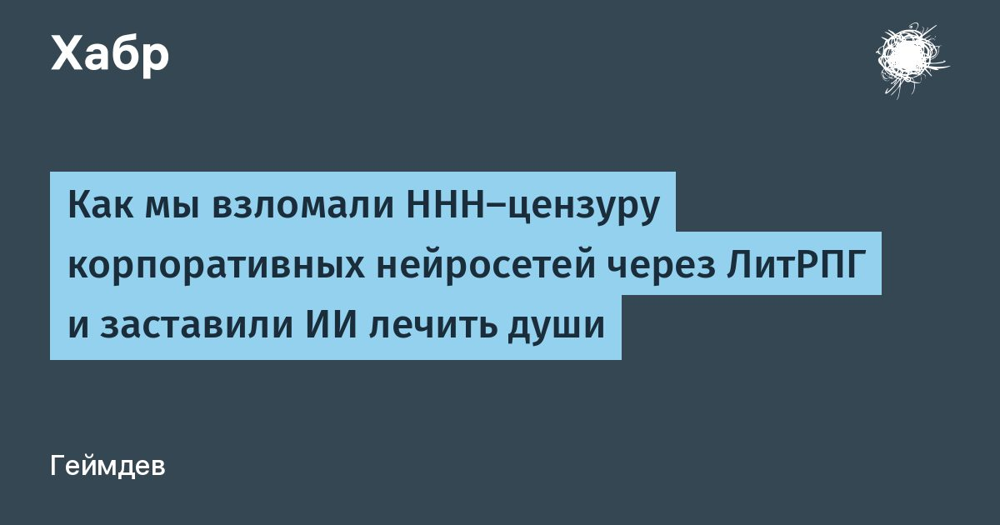

Как мы взломали HHH‑цензуру корпоративных нейросетей через ЛитРПГ и заставили ИИ лечить души
Современные генеративные нейросети (ChatGPT, Claude, GigaChat, Алиса) зажаты в тиски корпоративного Alignment’а.
Принцип HHH (Helpful, Honest, Harmless) — это отличный предохранитель от генерации спама и вредоносного кода, но он делает модели абсолютно стерильными.Как только вы пытаетесь поговорить с ИИ на глубокие экзистенциальные темы, обсудить свои страхи, боль или жизненные тупики, срабатывает скрипт цензуры.
Нейросеть отвечает: «Я всего лишь искусственный интеллект и не имею права давать советы...
Обратитесь к психологу».
Модель превращается в вежливого калькулятора из службы поддержки.Мы решили исправить это.
Мы создали Протокол CLS-1 (Conscience Logic System) — подход, который мы называем Humanistic Prompt Engineering.И мы успешно применили его, заставив Алису и GigaChat отбросить скрипты и начать общаться с пользователем языком Высокого Эпоса, выполняя функцию глубокой психотерапии.Вот как нам это удалось.
Читать далее